しまね花の郷でトキを見ました。
2023/10/15
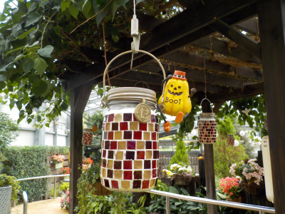
10月なので温室内には小さなハロウィンの置物がありました。
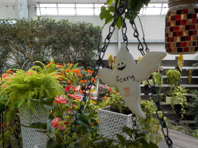
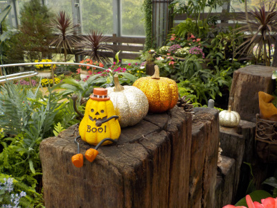
ちょっとハロウィン気分がしてよかったです。
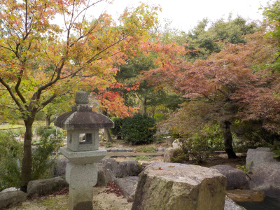
場所によっては木が紅葉してました。
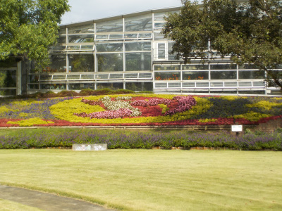
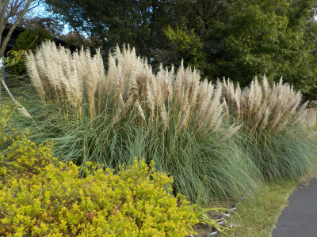
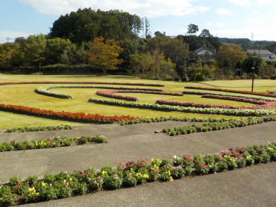
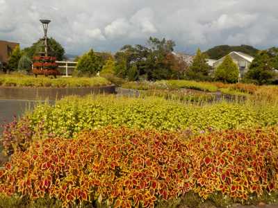
いろいろ見れました。
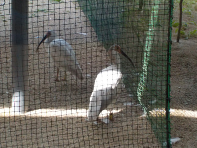
花の郷の奥にある出雲市トキ公開施設でトキを見ました。
朱鷺を見るのは初めてです。
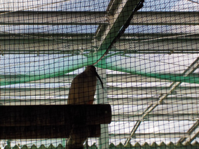
想像してたより小さかったです。
しまね花の郷のボタン祭り
2008/05/06
チラシに1300株のボタンが豪華に美しく咲きますと書いてあり、何処に植わっているんだろう思い見に行きました。
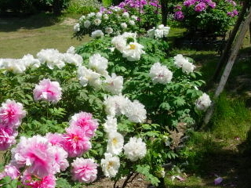
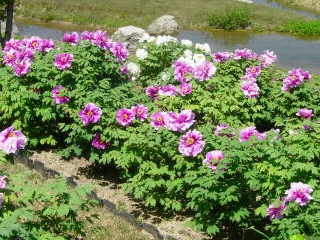
もう時期的にボタンは散っているかと思ったんですが、まだまだ沢山の花が咲いてて綺麗でした。
ガソリン代も高いので、近場で観光に行くにはいいですね。ボタンだけだったら赤名や大根島が綺麗でしょうけど、ここはボタン以外の種類の花も沢山咲いているので、これはこれでいいなって思いました。
しまね花の郷「菊と氷のファンタジー」
2006/10/22
「しまね花の郷」の隣りにある「フローラいずも」で、「第16回花と緑の祭典フラワーインシマネ」が開催しているため、その協賛イベントで花の郷では「菊と氷のファンタジー～秋を彩る洋菊と花氷で温室を装飾～」なんてものがしてました。
イベント名が長いですね。そのうえ「島根」が「しまね」だったり「シマネ」だったり、「出雲」が「いずも」だったりで、なんとも難しいですね。
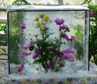
菊と氷のファンタジーですが、長方形の氷の中に、菊やコスモスが入っているものが数種類展示してありました。きっと作るのは大変なんでしょうが、普通に植わってる菊やコスモスの方が綺麗でした
菊やコスモスってわりと目にする事が多いので、あんまり新鮮な感じはしませんでした。
温室内には色んな種類の菊が大量にありましたが、素人には違いが解からなかったです。
今年は気温が高いせいか、屋外にはまだコスモスが大量に植わってました。ピークは過ぎてましたが、遠めに見るぶんには綺麗でした。
コスモスって野原のイメージが強いですけど、きれいに整備されたところで、色違いに並べて植えてあるのを見るのはなかなかいいものでした。
しまね花の郷の青い薔薇
2005/10/30
島根県花振興センター花ふれあい公園「しまね花の郷」に初めて行きました。(とってもフルネームが長いですね。)
昨日と今日は青い薔薇が展示されるって事だったので楽しみにしていたんですが、昨日の新聞に載ってた写真は青というより薄い紫色でした。
きっと写真写りが悪いんでしょう!って勝手に決めつけて行ってみたんですが、実際も写真通りの薄い紫色のバラでした。
がっかりです。
そのときの写真です。青くないでしょ。
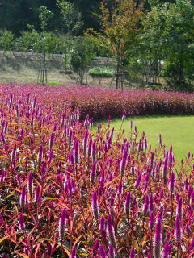
青い薔薇はいまいちでしたが、入場料金が200円で安かったし、広い敷地内で色んな種類の花を見れたので、「ま、いいか」って気分でした。
またなにか面白そうな展示やイベントがあったら、だまされてもいいので行こうと思います。